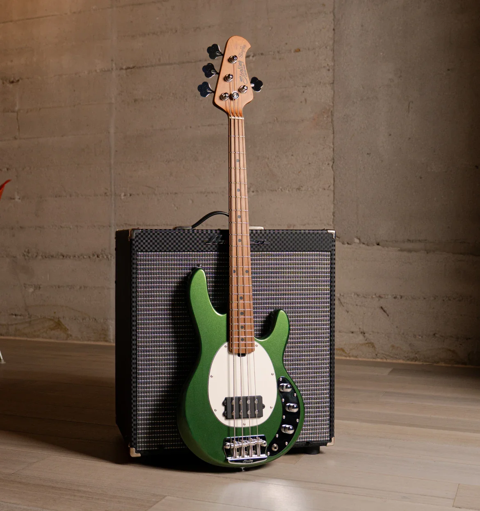
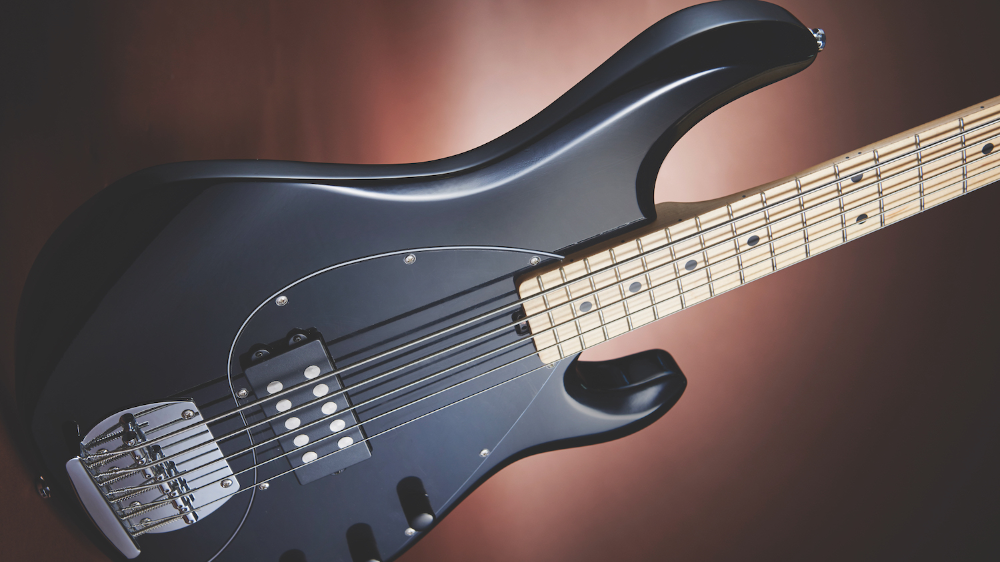

The electric bass is an instrument built in the style of an electric guitar; however, it produces lower frequencies. It produces sounds when the metal strings vibrate over magnetic pickups. The majority of electric basses have four strings, but some basses with five, six, seven, or eight strings are favored by certain electric bass players. The electric bass can be used to play funk, rock, jazz, metal, etc.
Length of Bass: Around 44-46 inches
Type of sound it makes: Deep rumbling sounds.
Average cost: Around $300 to $900

Click to go back to the homepage!